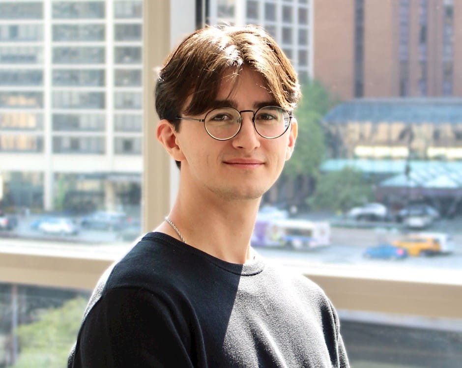

I'm a predoctoral fellow at the Center for Applied AI at Chicago Booth. I graduated from CU Boulder in 2025 with a B.S. in Computer Science (summa cum laude, 4.0 GPA, graduated one year early). My work spans multimodal ML, NLP, computer vision, LLM-based data extraction, and agentic AI. I'm applying to CS PhD programs for Fall 2027.
DELM — Python toolkit for reproducible, scalable LLM-based structured data extraction.
GitHub
PyPI
Docs
University of Colorado Boulder, B.S. Computer Science, 2022–2025
summa cum laude, 4.0 GPA, Dean's List, graduated one year early